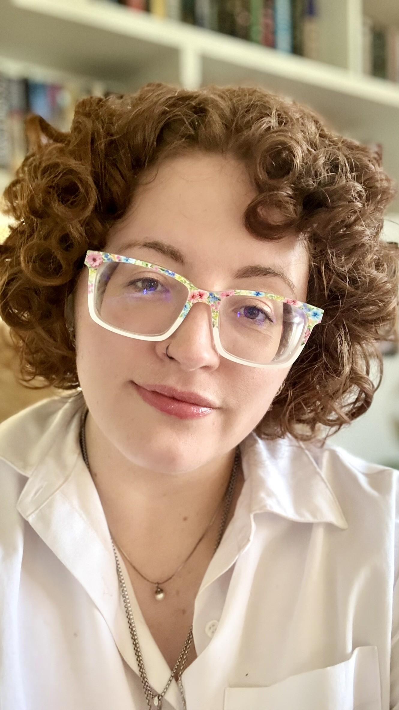

PhD Candidate · University of Auckland
Machine Learning & Affective Computing · Auckland Bioengineering Institute
I apply deep learning to multimodal emotion recognition — fusing speech, physiological signals, and facial expression for real-time affective state estimation. My background spans cybersecurity, cryptography, and adversarial machine learning.

Empathic Computing Lab
Multimodal emotion recognition from speech, EEG, and physiological signals. Currently contributing to the Tōku Hoa personalised mental health agent at the Empathic Computing Lab, University of Auckland.
GAN-based intrusion detection, malware classification, adversarial machine learning, and network traffic analysis. Research conducted at Massey University's Cybersecurity Lab.
Novel symmetric cipher design using visual cryptography and error-correcting code theory. Coordinate Matrix Encryption — a post-quantum resistant stream cipher — was the subject of my Master's thesis at AUT.
Full list on Google Scholar · ResearchGate
A personalised AI agent for mental health support, integrating multimodal emotion recognition — speech, biometrics, and facial expression — for real-time affective response. PhD project at the Empathic Computing Lab, University of Auckland.
PyTorch · Transformers · EEG · Speech Processing
PublishedExtended image-translation framework for network intrusion detection. Converts traffic flow data into semantically structured images, enabling CNN-based attack classification with improved feature relationship retention.
DeepInsight · CNNs · Network Traffic Analysis
PublishedA symmetric stream cipher using a 2D key matrix, visual cryptography security principles, and error-correcting code theory. Offers brute-force resistance 157,899 orders of magnitude greater than 128-bit AES. Subject of my Master's thesis at AUT.
Graph Theory · Visual Cryptography · Java · Post-Quantum
PublishedA lightweight symmetric stream cipher for IoT and edge environments, operating in linear complexity with an extremely large key space. Formalisation of the CME research for low-resource deployment, published in Cryptography (MDPI).
Stream Ciphers · IoT Security · Lightweight Crypto
I welcome contact from researchers, industry practitioners, and collaborators working in machine learning, cybersecurity, and affective computing. I aim to respond within five working days.
a.dunmore@aucklanduni.ac.nz